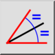
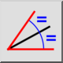
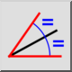
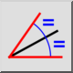

Bissetriz angular
Barra de Ferramenta / Ícone:
 

Menu: Draw > Linha > Bissetriz angular
Atalho: L, B
Comandos: linebisector | bisector | lb
Esta é uma tradução automática.
Barra de Ferramenta / Ícone:
 

Menu: Draw > Linha > Bissetriz angular
Atalho: L, B
Comandos: linebisector | bisector | lb